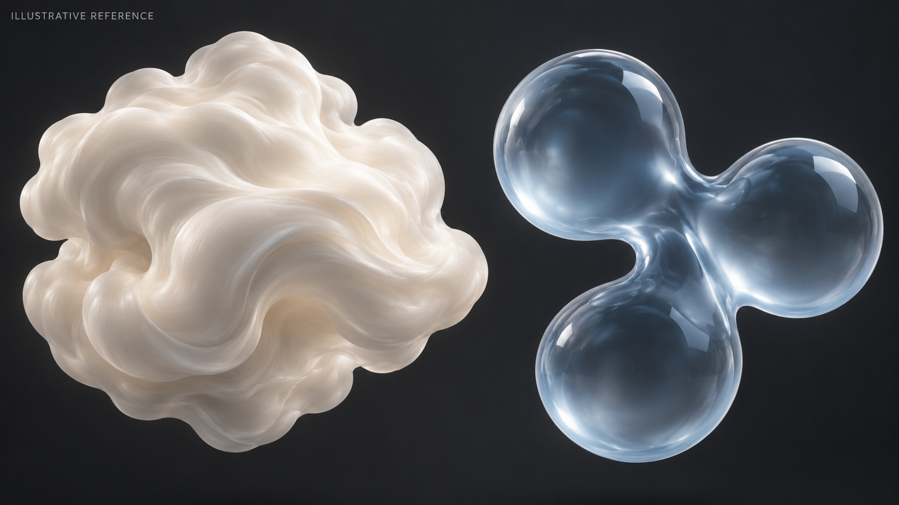
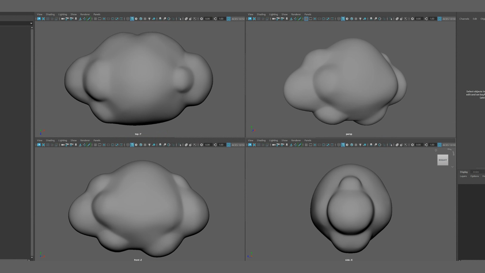
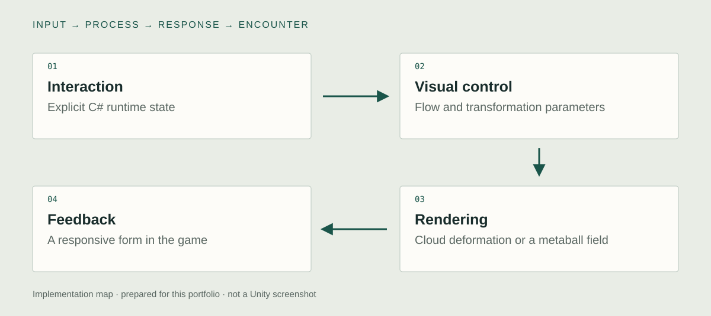

What I built in Unity / existing implementation
Separate object motion from shader deformation.
I developed cloud-form shaders and a raymarched metaball implementation for droplet-like forms in Unity. C# controls connect interaction and runtime parameters to visual feedback. The archive also documents authored growth states prepared with consistent mesh topology.
01 / Unity C# · HLSL · shader parameters
Control cloud form independently of object motion
I developed shaders for cloud-like forms and connected runtime control to their visual behavior. Internal flow and deformation are different controls from translating the object itself. The form can change while its Transform remains a separate part of the game logic. The independent C# and HLSL example below isolates that principle.
Unity view to capture
- Show
- Transform values beside the actual shader parameters and their C# control path.
- Demonstrate
- Keep the object position fixed while reversing the internal flow or changing deformation strength.

02 / HLSL · raymarching · implicit forms
Render droplet fusion through raymarched metaballs
I implemented raymarched metaballs for droplet-like forms that appear to merge continuously. The visible surface is produced from a field rather than simply intersecting rigid sphere meshes. Rendering a fused surface and determining gameplay contact remain separate responsibilities, so a convincing visual merge should not be mistaken for a matching physics collider.
Unity view to capture
- Show
- The production field definition and raymarching pass beside the separate contact or proximity logic.
- Demonstrate
- Move two field sources together, show the fusion, and identify how interaction is evaluated.
03 / Authored growth targets · fixed topology · runtime control
Preserve the artist's control over transformation
The public technical archive also documents growth states prepared with consistent mesh topology. Corresponding vertices let authored forms belong to one transformation sequence. This gives the artist direct control over the intended silhouettes while C# and material controls connect the visual work to a running Unity scene.
Unity view to capture
- Show
- The Maya target states, their shared topology, and their actual Unity control.
- Demonstrate
- Move through the authored states and distinguish that process from procedural shader deformation.

Technical structure & design decisions
How the parts connect.

- 01Interaction
Explicit C# runtime state
- 02Visual control
Flow and transformation parameters
- 03Rendering
Cloud deformation or a metaball field
- 04Feedback
A responsive form in the game
Cloud form and internal flow
The documented cloud work controls a shader's internal noise flow rather than making object translation stand in for all visual movement. The shape can change while the object's transform remains a distinct control.
Droplet fusion through an implicit field
Raymarched metaballs support the appearance of forms merging continuously. That visual fusion does not automatically produce an equivalent collision shape, so rendering and interaction logic remain distinct responsibilities.
Authored transformation states
Fixed-topology growth targets preserve vertex correspondence. They provide a different kind of control from procedural deformation and let the intended form be edited directly.
New independent source example
C# to shader control
An independent flow controller and simplified URP shader illustrate parameter control. This is source authored for the portfolio, not the production cloud or metaball implementation. Unity compilation is still pending.
ShaderFlowController.cs
phase += flow * Time.deltaTime;
target.GetPropertyBlock(block);
block.SetVector(Phase, new Vector4(phase.x, 0, phase.y, 0));
block.SetFloat(Amplitude, amplitude * intensity);
block.SetFloat(Frequency, frequency);
target.SetPropertyBlock(block);The matching HLSL displacement
float3 p=input.positionOS.xyz;
p += input.normalOS * Noise(p*_Frequency + _FlowPhase.xyz) * _Amplitude;
o.positionWS=TransformObjectToWorld(p);
o.positionCS=TransformWorldToHClip(o.positionWS);
o.normalWS=TransformObjectToWorldNormal(input.normalOS);This sample displaces vertices with noise and retains the original normals for a stylized response. It does not implement the production cloud renderer or raymarched metaballs.
What to inspect in the source
- SetFlow validates and clamps the direction. Update integrates it into a phase instead of resetting time or translating the object.
- MaterialPropertyBlock carries the flow, frequency, and amplitude to this renderer. The controller expands local bounds for the declared displacement range.
- This sample leaves collision geometry and displaced normals unchanged. Inspect those boundaries before reusing it for a task.
The conceptual starting point
How can a continuously changing visual form remain controllable enough for both art direction and interaction?
This collaboration required technical decisions to preserve a particular visual character while making it work as a real-time system. Cloud deformation and droplet fusion are different rendering problems. Treating them separately makes their behavior easier to direct and their limitations easier to inspect.
Pre-production & development logic
From intent to interaction.
A retrospective design note based on the documented work. Newly prepared for this portfolio.
- 01
Translate the direction
Describe the behavior the artist wants to see, then separate shape, movement, and interaction requirements.
- 02
Prototype the rendering approach
Compare explicit mesh deformation with an implicit field according to the visual behavior each can express.
- 03
Return to runtime control
Expose the parameters that matter to direction and inspect the rendered response alongside the game state.
A possible research extension
Proposed comparison
How do different visual deformation methods affect the legibility of an object's interactive state?
The visual representation used for the same state change.
Input action, state transition, camera, and presentation timing.
This is a proposed study direction motivated by the artwork. No controlled study or measured effect is reported for this comparison.
Evidence & implementation scope
What can be inspected.
The existing collaboration and public technical media are distinct from the independent shader example shown on this page. No private production source or performance benchmark is included.
Technical captures to add
- Record Game view, Transform, and shader control values while reversing the field direction and changing intensity.
- Show the droplet field and the separate contact or proximity logic. Identify the actual Maya growth states and their Unity controls.
Existing project images, illustrative references, and new source examples are labeled separately. Original source, a current executable, and measured performance remain separate evidence items.